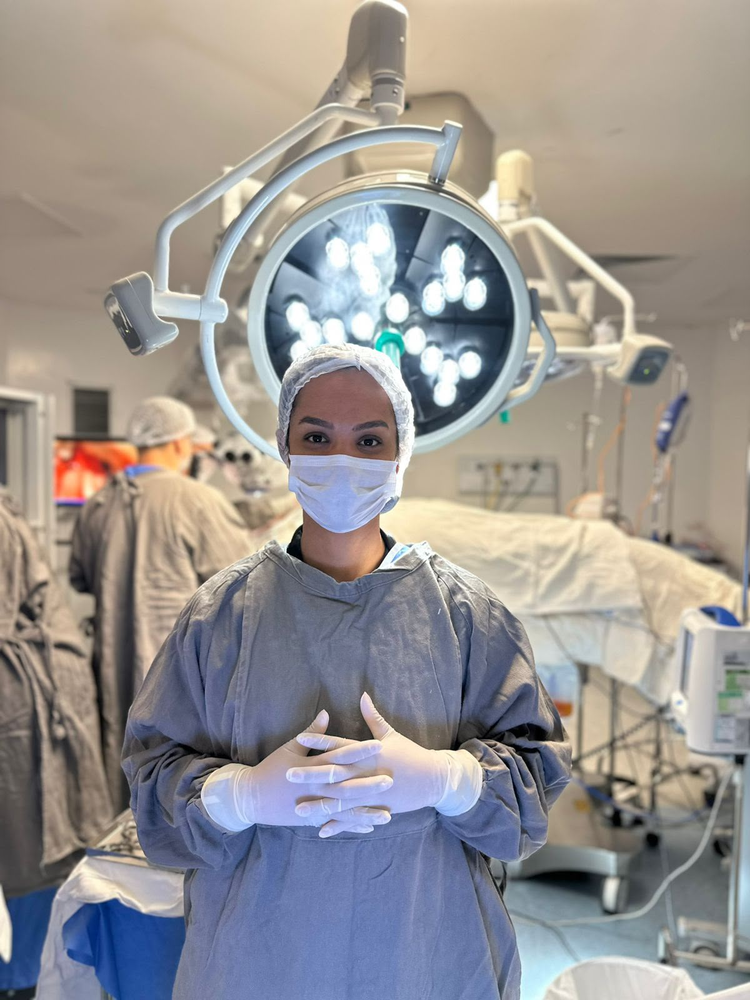
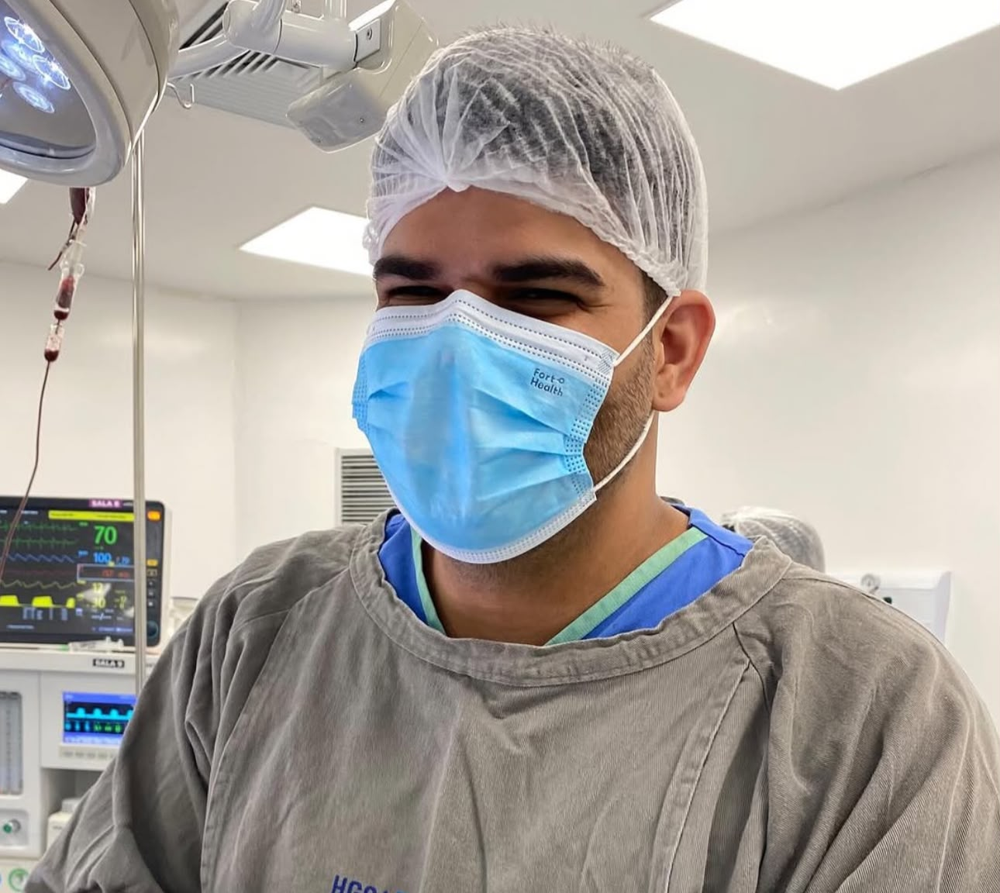

Um dos mais completos programas de capacitação em instrumentação cirúrgica, desenvolvido para formar profissionais preparados para atuar com segurança, conhecimento técnico e excelência.

Uma Capacitação ampla, progressiva e alinhada às exigências da prática cirúrgica moderna.
A Prime Instrumentação é um dos mais completos programas de capacitação em instrumentação cirúrgica, desenvolvido para formar profissionais preparados para atuar com segurança, conhecimento técnico e excelência em diferentes especialidades cirúrgicas.
A Capacitação aborda desde os fundamentos da instrumentação cirúrgica básica até conteúdos avançados, sendo a Capacitação ideal tanto para estudantes da área de saúde que desejam iniciar na carreira quanto para instrumentadores cirúrgicos que buscam se especializar e se atualizar.
Como diferencial, a Capacitação conta com módulos exclusivos de Neurocirurgia, incluindo um bônus especial em Instrumentação em Neurocirurgia Minimamente Invasiva, onde os alunos terão acesso ao conhecimento dos principais equipamentos, instrumentais e tecnologias utilizados nos procedimentos neurocirúrgicos modernos.
Comprovação de carga horária para enriquecer seu currículo profissional.
Estude no seu próprio ritmo, com flexibilidade total e suporte digital.
Acesso permanente a todas as aulas e atualizações futuras da Capacitação.
Domine desde os fundamentos básicos até as tecnologias mais avançadas da instrumentação.
Fundamentos da instrumentação cirúrgica básica e as bases da atuação profissional.
Técnicas de montagem, organização e otimização das mesas cirúrgicas por procedimentos.
Reconhecimento técnico aprofundado, classificação e manuseio de instrumentais e materiais.
Protocolos práticos, comportamento e rotinas essenciais dentro do bloco cirúrgico.
Normas de biossegurança, assepsia, esterilização e garantia de boas práticas cirúrgicas.
Atuação qualificada do instrumentador nas mais diversas especialidades cirúrgicas.
Introdução à instrumentação e dinâmica de procedimentos no campo da Neurocirurgia.
Capacitação técnica específica em procedimentos de Neurocirurgia de Crânio e de Coluna.
Módulo bônus focado nas exigências técnicas da Neurocirurgia Minimamente Invasiva.
Manuseio, identificação e reconhecimento dos principais equipamentos usados em neurocirurgia.
A Prime Instrumentação foi criada para oferecer uma Capacitação sólida, atualizada e alinhada às exigências da prática cirúrgica moderna, preparando profissionais para atuar com confiança nos mais diversos cenários do centro cirúrgico.
Corpo de instrutores e coordenadores focados em impulsionar sua carreira.

Instrumentadora Cirúrgica
Graduanda em Enfermagem
Instrumentador Cirúrgico
Coordenador da EquipeMédica Neurocirurgiã Preceptora
Coordenação CientíficaMédico Neurocirurgião
Chancela AcadêmicaEscolha a modalidade ideal para o seu momento profissional e impulsione sua carreira.
Esta Capacitação reúne todo o conteúdo dos módulos anteriores e acrescenta uma capacitação exclusiva em Cirurgia Endoscópica da Coluna Vertebral, uma das áreas de maior crescimento e avanço tecnológico da medicina moderna.
Inicie seu processo de pré-inscrição e receba os detalhes completos da nossa assessoria.
Acesso vitalício para que você aprenda no seu ritmo. Revise as aulas sempre que necessário, reforçando o conhecimento e aprimorando suas habilidades ao longo do tempo.
Aviso: Esta capacitação destina-se ao desenvolvimento e aprimoramento de conhecimentos em Instrumentação Cirúrgica. Não constitui graduação, pós-graduação, especialização ou curso técnico. Os participantes que concluírem o programa receberão certificado de participação/conclusão com a respectiva carga horária.